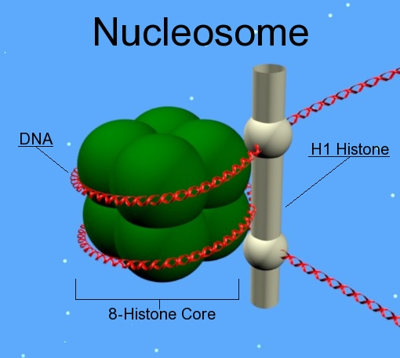

brain things
what is the first thing i want to know? there is on the order of 100b neurons, people throw around the number 86 billion. okay, but there are not only neurons. how many non-neurons are there? okay, interesting, 4o says also O(100b) glial cells.
what are glial cells? okay it looks like at least in the brain, i need mainly to know 3 types of glial cells:
- 50% oligodendrocytes - a type of glial cell that wraps around the axon forming myelin, speeding up electric signaling.
- 30% astro - maintain extracellular matrix, blood flow
- 10% microglia - immune cells, pruning synapses, remove debris
so i guess astrocytes are the most important.
- they clear excess neurotransmitters like glutamate, so there is not too much which would result in overactivation of the brain, so that seems quite important for even computation.
- when a brain region becomes active the astrocytes sense changes in neurotransmitters and signal to blood vessels to dilate, crazy. called neurovascular coupling, important for understanding fMRI.
- release signals that influence synapses, so strength, learning, plasticity
- can become “reactive astrocytes” in infection, alzheimers etc.
okay that is enough for me for now about astrocytes. and the oligodendrocytes kind of makes sense to me not going deeper with that.
there is 1e8 neurons and 1e8 glial cells. but like oligodendrocytes are forming myelin always or also different things, and in that case is one oligodendrocyte only responsible for one axon, and how many axons? okay oligodendrocytes myelinate multiple axons. 1 axon per neuron but they can branch. estimated that 50% of the axons in the brain are myelinated but depends on regions. okay the primary difference is gray and white matter: 90% of white, and maybe 20% of gray.
but i did not learn what white and gray is. okay, it sounds a bit bullshitish, not easy enough to get a clear answer. roughly
- gray matter: high number of somas per volume
- white matter: low number of somas per volume AND high number of myelinated axons per volume
at least i will run with this. so now i am getting a picture of the brain as having some kind of volume in R^3 and there is some kind of neuron soma count measure that describes how many somas are in a specific region, and then abstracting it as a density even though not continous giving neuron soma density. And then there is an axon count measure and axon count density and myelinated axon count measure. And these are the interesting things, and gray and white matter are simplifications.
(okay, just got distracted because presented 4o that i wanted to think in terms of measures and it wanted to go off with fiber bundles. so learned that the tangent bundle is the a disjoiint union of the tangent spaces for each point on the manifold, disjoint in the sense that you keep track of which point it came from. so disjoint union is a bit like enumerate in python, you keep an index.)
okay so where were we. we have neurons with somas and axons and glial cells especially astrocytes and oligodendrocytes. so we are still looking at it from afar. something about energy. how much energy is it using and are neurons using more energy than glial cells?
- the energy usage is on the order of 20 W and roughly 20% of the brain’s energy.
- neurons use 75% and glial cells then less than 20%.
the reason why they use relatively much has to do with action transmission (ion gradients, glutamate release/reuptake)
okay so one thing is the density of neurons and the density of glial cells and their relationships. we saw that the notion of gray matter means that neuron soma density is not uniform, is the astrocytes the same way. ok it sounds like i should think of astrocyte density being related to neuron density, because neurons “need” astrocytes, so more neurons need more astrocytes. so astrocyte denisty is not uniform. locally it can be viewed a bit as a regular lattice.
okay i wonder how one can know these kind of things. spatial transcriptomics of neuronal cell cultures? some methods can do single cells RNA others do aggregate per “spot”? Okay it sounds like you take a mouse brain flash freeze it make a slice for example from the cortex (barbaric unless it already was dying) of 10 \(\mu m\) (mu means micro so one 1 \(\mu m\) is 1e-6m).
- The soma of a neuron is on the order of 10 micrometers, 1e-5 meters.
- same for astrocytes 10 micrometers, but that is the cell body, it has “processes extending” that are on the order of 100 micrometers which would be its radius.
hmm, i am starting to think about how i should imagine it. if i have a cube with sidelength 100 micrometers, giving what proportion of the volume is taken up by different things? 4o says
- 10% neuron somas
- 10* glial somas
- 45% glial and neuron processes (dendrites axons etc)
- 20% extracellular space with water and ions and neurotransmitters etc
- 5% capillaries
and they form some kind of soft tissue.
ok that was quite a high degree of “exploitation” in this line, a lot of focus on astrocytes etc. i will continue a bit
one of the things we learned was 75% of energy going to neurons because of spiking. i can imagine energy requirements changing over time, after all that is what fmri is about, but are there some regions that are just more energy intesive, and is that mostly predicted by neuron soma density?
first, like how can we measure? FDG is a glucose that is modified to emit positrons and can then image with PET-scan. Cortex, especially frontal and visual cortex, uses a lot of glucose.
inside cells
so we have these cels they are maybe 10 micrometers? what’s going on inside there. there is a nucleus, i guess it is like a ball. it is roughly 5 micrometers diameter, it takes up 10% of the volume. does that match? yeah it is okay. and the mitrochondria also 10% only one nucleus and multiple mitochrondira?
- order of 100 to 1000 mitochrondria per cell
- shaped like 0.5x2 micrometers
great and inside the nucleus, the chromatin fills up quite well even though not taking up all the volume
- order of 10-100 chromosomes, 46 for humans
- 3e9 basepairs total, varying from 50 to 250 million base pairs per chromosome, decreasing pretty linearly with rank
- okay and it is like this: 8 histone proteins form as 2x2x2 box and order of 100 base pairs wrap around it
- on one side is a H1 histone where the dna enters and exits
- order of 10-100 base pairs of linker dna to next structure
- the structures are called nucleosomes

the word chromatin somehow refers to all of these nucleosomes and some other proteins etc not super clear
word chromosome also being used a bit weird, focused on when the cell is diving etc, but also numbering them. so each chromosome there is “chromatin” for that chromosome somewhere in the cell, seems you can say “the chromatin for chromosome 11”
there are 3 RNA-polymerases, it is number 2 that is doing all the the transcription for real proteins.
can transcribe sections that are longer than is on a single nucleosome so there is a crazy dance with other protein complexes like FACT etc that unfold the nucleosome etc.
multiple different RNA-polymerase-2’s can be transcribing at the same time at the same interval
speed is O(1K) basepairs per minute, can vary by factor 3x depending
O(50K) RNA-polymerase-2’s inside the nucleus at a single time. O(15K) transcribing at a given time.
O(1e6) transcripts in the cell at given time, O(1e10) proteins in the cell at given time, one transcript can be translated to protein multiple times
30% of the volume in cytoplasma taken up by macromoleucles like RNA and protein. 50% is protein, 25% RNA. I am confused concluded that proteins were much more abundant? it’s because RNA is much larger, nucleotides are bigger than amino acids. think 4o might be starting to hallucinate now that i am inquiring about this.
okay amino acids are O(50) Å^3 (1Å = 0.1 nanometer, 1e-10 meters) and nucleotides O(500) so one order of magnitude difference, but we had 3 ooms difference in abundance of rna and protein.
okay seems it is because of rRNA in ribosomes very huge, and makes up 80% of RNA in the cell
the ribosome is made up with a core part of it being rRNA that is why it is huge.
translation rate is O(10) AA/s, 30-60 seconds per protein typical
O(1e6) ribosomes in the cell, ~20 nm in diameter, ~7K nucleotides for the rRNA.